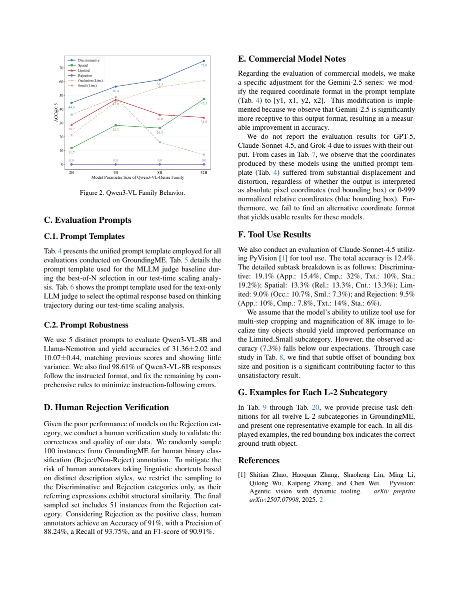

一句话结论
困难视觉定位（visual grounding）必须同时测同类细辨、空间关系、低可见性和无匹配对象的拒答；简单负样本微调能提高拒答，却可能降低域外正例与总分，因此不能把“更会拒答”直接写成“更可靠”。[2][3]
问题定义
任务输入图像与指代表达，输出最多一个边界框（bounding box）或null。它评估静态图像中的对象定位，而非自由问答、视频时序或编辑保持性。长描述若可被独特类别词破解，不能证明复杂指令理解（主文§1–3）。[2]
方法概述
- 四维数据：1,005项，细辨204、空间300、低可见性300、拒答201，细分12任务。源图为SA-1B及HR-Bench 8K；独立源图数量未报告。[2]
- 构造机制：RAM++与GroundingDINO产生候选框，针对多同类对象筛选；小目标人工框；Gemini-2.5-Flash生成描述，人工纠错与添加拒答中的事实矛盾。[2]
- 评测接口：主表尽可能关闭thinking、greedy解码，用IoU>0.5；补充还提供0.75/0.9与多阈值均值mAcc。Gemini采用专门坐标顺序，格式解析也是测量的一部分。[2][3]
核心实验与结果
| 设置 | 原文结果 | 解读边界 |
|---|---|---|
| 25模型主表，no-thinking | 最佳Qwen3-VL-A22B总分45.1%，拒答0% | 只是该构造与接口下的最高分，不是人类上限 |
| Best-of-16轨迹选择 | 16轨迹均分49.8%，A22B带CoT裁判54.3%，无CoT52.2% | 额外生成与裁判计算，非同成本收益 |
| Qwen3-VL-8B负例SFT | 原总分31.0%；五种比例为27.0/25.0/28.7/28.5/26.0% | 拒答改善未带来域外总分改善 |
| 域外非拒答子集 | 38.8%降至微调模型中最高33.0% | 正例代价必须与拒答收益同时报告 |
| 严格定位 | A22B Acc@0.75 38.5%、@0.9 29.1%、mAcc37.0% | 已有多IoU测试，不能误称论文只测单阈值 |
定位：主文Table3–5、§5.3/Fig6；补充Table2–3。[2][3]
人评、鲁棒性与印表冲突
主文50项一致性κ均值0.69；补充另做100项细辨/拒答二分类人工验证，报告准确率91%，并有五提示测试及Qwen8B格式遵循率98.61%。这些控制应被承认，但不是全体模型输出的盲法审计，也不证明1005独立源图。[2][3]
有两处应保留的冲突：
- 正文写thinking提升4.7–7.4点；按主表/补表，GLM为32.1→34.0（1.9点），Qwen8B为31.0→34.3（3.3点）。保留提升方向，不复述有冲突的范围。[2][3]
- 补充D写100项含51拒答、P88.24%/R93.75%。若51为真阳性类数量且为单次汇总，则与Acc91%及F1 90.91%兼容的混淆矩阵会给出P93.75%/R88.24%。这可能是参照方向或P/R互换；没有原始矩阵，不能替作者改数。原页已视觉核对。[3]

局限或疑问
- 新描述不等于源图无污染；SA-1B/HR-Bench训练重叠未知，须按源图分组做去重与不确定性统计。[2]
- GPT-5、Claude-Sonnet-4.5、Grok-4因坐标问题未列主表，不能直接断言其感知能力最差；Claude+PyVision另报12.4%。[3]
- 负例SFT每配置30000样本、3epochs，TTS每题16轨迹；缺完整GPU、API、视觉token、延迟与人工成本。[2]
- 表达生成与被测Gemini、候选生成与同系裁判有角色耦合；文本裁判及无CoT对照提供有限反证，仍不等于因果视觉依赖。[2][3]
- README提供评测入口与test split，注明研究用途；本次未运行模型或重新标注。[4]
对当前 Wiki 判断的影响
在topics/vision-language中把“局部证据验收”明确拆成正例定位、拒答、严格几何、格式鲁棒性与成本。与HallusionBench互补：流畅或正确的答案不自动说明视觉依据可靠；两者任务不同，不能合并分数或外推到安全部署。
原始链接与材料
- 正式论文页
- 官方主文 · 官方补充 · 官方代码
- 本地raw保存原文、补充、抽取文本、网页、README及独立analysis.md；DOI未列，arXiv:2512.17495仅用于版本关联。[1]
Sources
[1] https://openaccess.thecvf.com/content/CVPR2026/html/Li_GroundingME_Exposing_the_Visual_Grounding_Gap_in_MLLMs_through_Multi-Dimensional_CVPR_2026_paper.html
[2] https://openaccess.thecvf.com/content/CVPR2026/papers/Li_GroundingME_Exposing_the_Visual_Grounding_Gap_in_MLLMs_through_Multi-Dimensional_CVPR_2026_paper.pdf
[3] https://openaccess.thecvf.com/content/CVPR2026/supplemental/Li_GroundingME_Exposing_the_CVPR_2026_supplemental.pdf
[4] https://github.com/lirang04/GroundingME